Azure Governance Enterprise Lab

| Project Category | Cloud Governance and Security |
|---|---|
| Platform | Microsoft Azure |
| Core Technologies | Azure Policy, RBAC, Resource Locks, Cost Management |
| Project Focus | Subscription-level governance for Production and Development |
Project Overview
This enterprise lab implements a subscription-level Azure governance foundation for two logically separated environments. It combines standardized naming and tagging, approved-region enforcement, policy-driven remediation, role-based access control, deletion protection, cost monitoring, and compliance validation.
1. Business Scenario and Requirements
YCS Enterprise Lab represents a small-to-medium organization hosting controlled Production workloads and an isolated Development environment in Microsoft Azure. The governance model must improve resource organization, operational control, security management, policy enforcement, cost visibility, and future scalability.
| Requirement | Description |
|---|---|
| Environment separation | Production and Development resources must be logically separated. |
| Standardized naming | All Azure resources must follow an identifiable naming convention. |
| Regional control | Resources may only be deployed in Qatar Central or UAE North. |
| Tag governance | Resources must use approved metadata, including Environment, Department, Owner, Cost Center, Criticality, and Project. |
| Environment validation | The Environment tag must contain only Production or Development. |
| Tag inheritance | Resources should inherit the Environment tag from their parent Resource Group when it is missing. |
| Resource protection | Production resources must be protected against accidental deletion. |
| Cost control | A monthly budget and cost notifications must be configured. |
| Access governance | Administrative access must follow role-based access control and least-privilege principles. |
| Compliance visibility | Azure Policy compliance must be reviewed and documented. |
2. Scope and Architecture
The project covers subscription-level governance, separate resource groups, standardized resource names and tags, core networking and storage resources for validation, custom and built-in Azure Policy assignments, approved locations, tag inheritance, resource locks, monthly budgets, RBAC, and compliance testing.
2.1 Subscription Design
| Component | Value |
|---|---|
| Subscription | Azure subscription 1 |
| Subscription purpose | Azure Governance Enterprise Lab |
| Governance scope | Subscription level |
| Production region | Qatar Central |
| Development region | UAE North |
| Approved regions | Qatar Central and UAE North |
| Project owner | Yasser Alrajeh |
A single subscription was selected for this controlled lab. Production and Development are separated by resource group while Azure Policy, RBAC, Cost Management, budgets, and compliance reporting are centrally governed at subscription scope.
2.2 Resource Hierarchy
- Microsoft Entra Tenant
- Azure Subscription 1
- Governance Controls
- Azure Policy
- Azure RBAC
- Resource Locks
- Cost Management
- Compliance
- rg-ycs-prod-core-01
- vnet-ycs-prod-01
- snet-app-prod-01
- nsg-ycs-prod-01
- pip-ycs-prod-01
- stycsprod01
- rg-ycs-dev-core-01
- vnet-ycs-dev-01
- snet-app-dev-01
- nsg-ycs-dev-01
- pip-ycs-dev-01
- stycsdev01
- Governance Controls
- Azure Subscription 1
3. Naming, Environment, and Tagging Design
3.1 Naming Convention
<resource-type>-<organization>-<environment>-<workload>-<instance>| Component | Example | Meaning |
|---|---|---|
| Resource type | rg, vnet, snet, nsg, pip | Identifies the Azure resource type. |
| Organization | ycs | Identifies the organization or lab. |
| Environment | prod, dev | Identifies Production or Development. |
| Workload | core, app | Identifies the workload or function. |
| Instance | 01 | Identifies the resource instance. |
| Resource Type | Production Name | Development Name |
|---|---|---|
| Resource Group | rg-ycs-prod-core-01 | rg-ycs-dev-core-01 |
| Virtual Network | vnet-ycs-prod-01 | vnet-ycs-dev-01 |
| Subnet | snet-app-prod-01 | snet-app-dev-01 |
| Network Security Group | nsg-ycs-prod-01 | nsg-ycs-dev-01 |
| Public IP Address | pip-ycs-prod-01 | pip-ycs-dev-01 |
| Storage Account | stycsprod01 | stycsdev01 |
Storage accounts use a compliant exception because Azure requires globally unique lowercase alphanumeric names without hyphens.
3.2 Environment Design
| Environment | Resource Group | Region | Criticality | Purpose |
|---|---|---|---|---|
| Production | rg-ycs-prod-core-01 | Qatar Central | High | Hosts controlled production resources. |
| Development | rg-ycs-dev-core-01 | UAE North | Medium | Hosts development and testing resources. |
Production Network
| Component | Configuration |
|---|---|
| Virtual Network | vnet-ycs-prod-01 |
| Address space | 10.10.0.0/16 |
| Subnet | snet-app-prod-01 |
| Subnet range | 10.10.1.0/24 |
| NSG | nsg-ycs-prod-01 |
| Public IP | pip-ycs-prod-01 |
| Storage Account | stycsprod01 |
Development Network
| Component | Configuration |
|---|---|
| Virtual Network | vnet-ycs-dev-01 |
| Address space | 10.20.0.0/16 |
| Subnet | snet-app-dev-01 |
| Subnet range | 10.20.1.0/24 |
| NSG | nsg-ycs-dev-01 |
| Public IP | pip-ycs-dev-01 |
| Storage Account | stycsdev01 |
3.3 Tagging Strategy
| Tag | Production Value | Development Value | Purpose |
|---|---|---|---|
| Environment | Production | Development | Identifies the deployment environment. |
| Department | IT | IT | Identifies the responsible department. |
| Owner | Yasser | Yasser | Identifies the resource owner. |
| CostCenter | CC-1001 | CC-1001 | Supports cost allocation and reporting. |
| Criticality | High | Medium | Identifies the business impact level. |
| Project | EnterpriseLab | EnterpriseLab | Associates resources with the project. |
The Environment value is restricted to Production or Development. Child resources inherit the value from their parent resource group when it is missing.
4. Governance Control Design
| Governance Control | Planned Configuration | Purpose |
|---|---|---|
| Custom Azure Policy | Allow only Production and Development Environment values | Prevent invalid environment classification. |
| Tag inheritance policy | Inherit Environment from Resource Group | Apply consistent metadata automatically. |
| Allowed Locations | Qatar Central and UAE North | Restrict deployments to approved regions. |
| Resource Lock | CanNotDelete on Production Resource Group | Prevent accidental deletion. |
| Budget | Monthly Enterprise Lab budget | Monitor and control cloud spending. |
| Cost alerts | 50%, 80%, and 100% | Notify the owner as spending increases. |
| RBAC | Owner, Contributor, and Reader roles | Apply least-privilege access. |
| Compliance | Azure Policy Compliance dashboard | Validate governance implementation. |
5. Implementation
The Azure Portal was used to deploy and validate the governed environment. The screenshots below retain the strongest implementation evidence while repetitive wizard screens and duplicate appendix images were omitted.
5.1 Resource Groups and Core Resources
Dedicated Production and Development resource groups were provisioned in approved regions. Non-overlapping VNets, subnets, NSGs, public IP addresses, and storage accounts provided representative resources for governance testing.


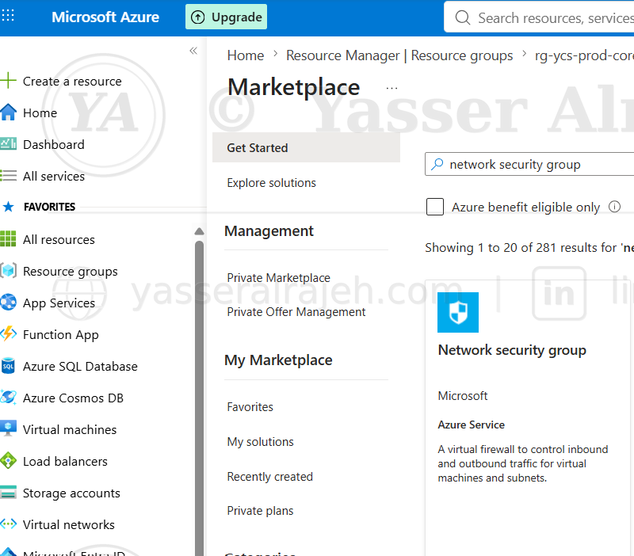
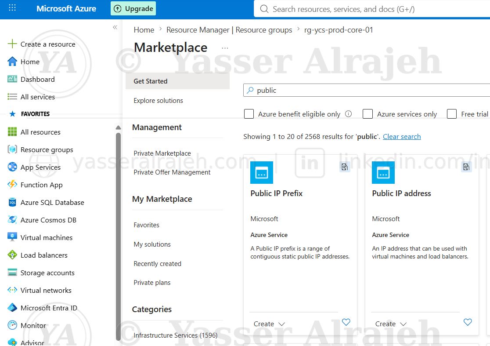

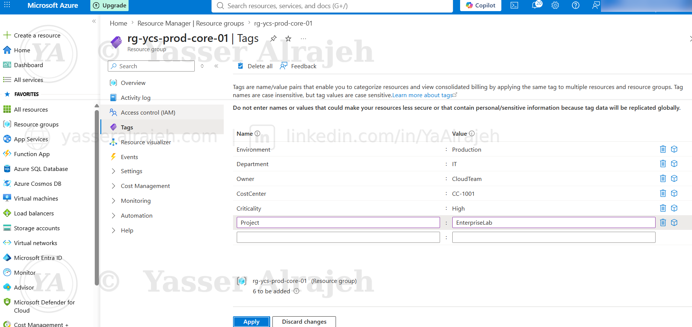
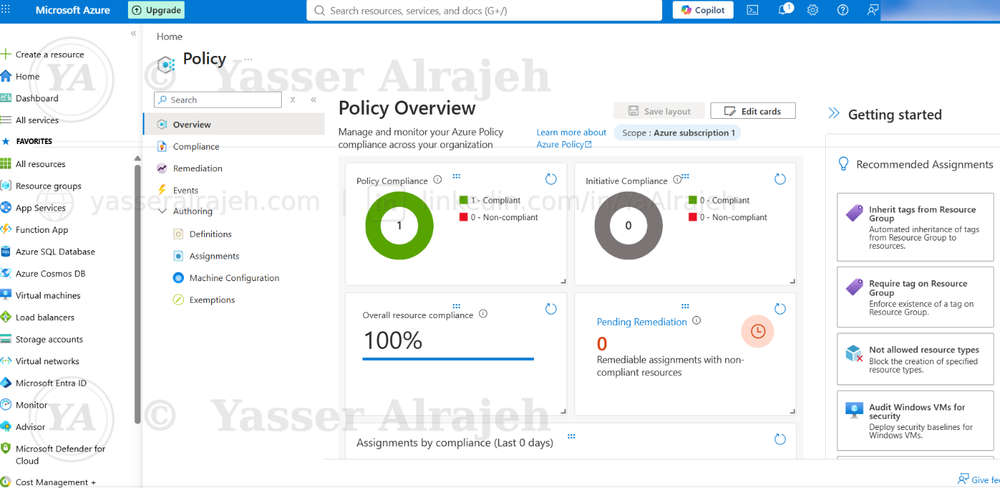
5.2 Tagging Implementation
The approved metadata schema was applied to the environment, including Environment, Department, Owner, CostCenter, Criticality, and Project.

5.3 Azure Policy
Built-in and custom policies were assigned at subscription scope. A custom JSON rule restricted the Environment tag to approved values, while location policy limited deployments to Qatar Central and UAE North. Tag inheritance and remediation standardized child resources.
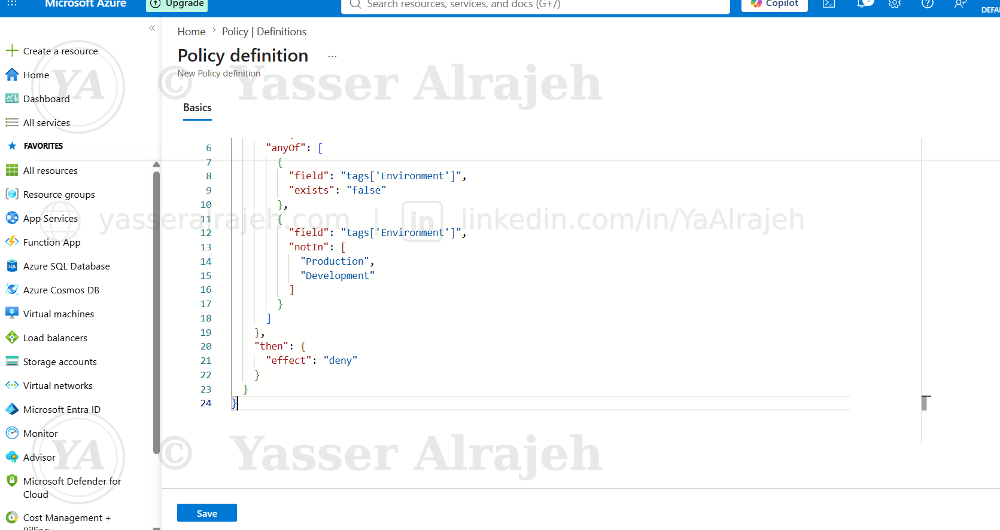

5.4 Resource Protection
A CanNotDelete lock protected the Production resource group. A controlled deletion attempt verified that Azure blocked the request.


5.5 Cost Governance
A monthly enterprise budget was created with notifications at 50%, 80%, and 100% to provide proactive visibility before spending exceeds the planned threshold.
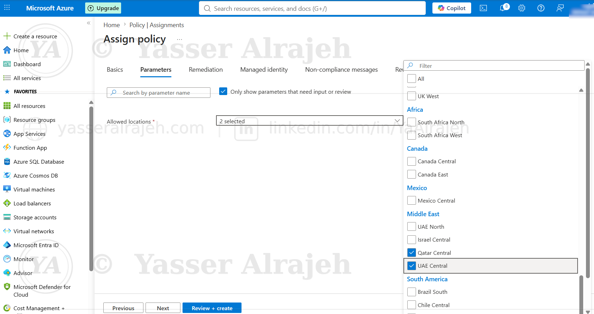

5.6 Role-Based Access Control
Owner, Contributor, and Reader roles were assigned at appropriate scopes to demonstrate least privilege and separation of duties.
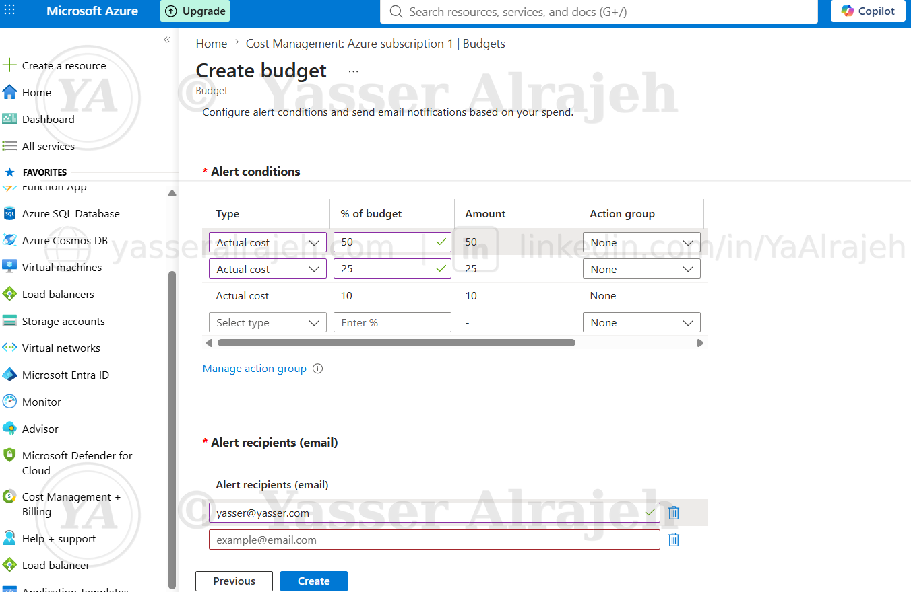
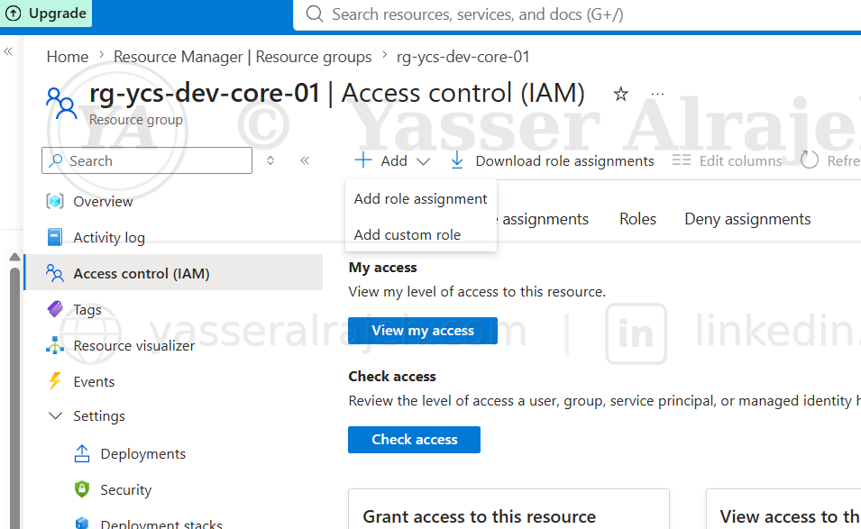
6. Governance Validation and Compliance
6.1 Policy Compliance and Remediation
The Policy Compliance dashboard was reviewed before and after remediation. Resource-level inspection confirmed inherited tags, and compliance improved after the remediation task completed.


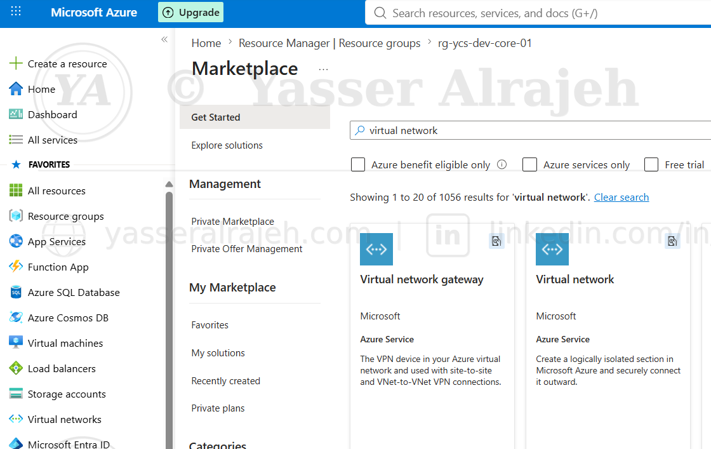
6.2 Cost Monitoring and Inventory
Budget notifications, resource inventory, and cost analysis were validated across resource groups and tags to support ownership and cost allocation.

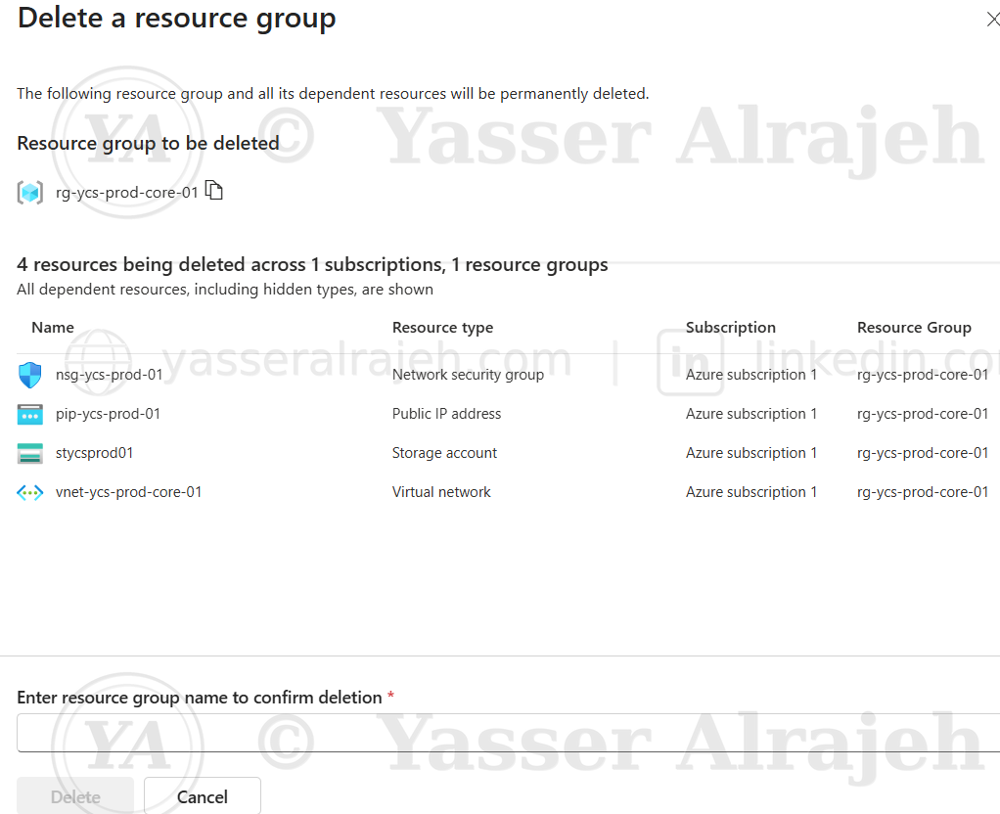
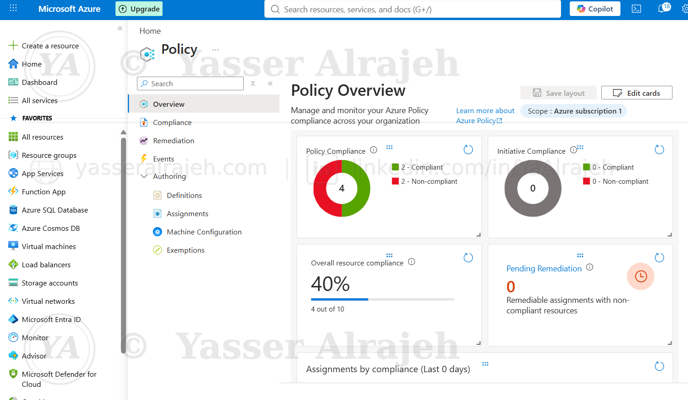
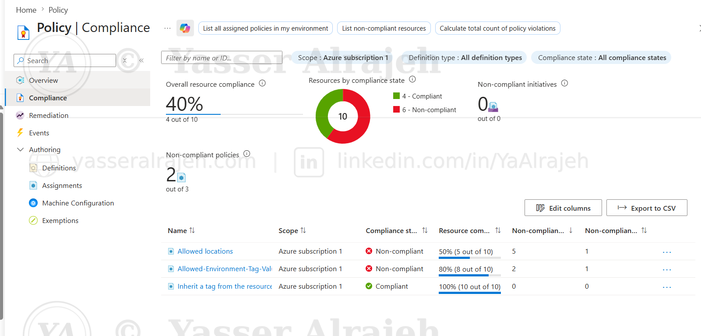
6.3 Negative Testing
Two deliberate non-compliant deployments confirmed enforcement: a resource in a non-approved region and a resource using an invalid Environment value were both denied by Azure Policy.

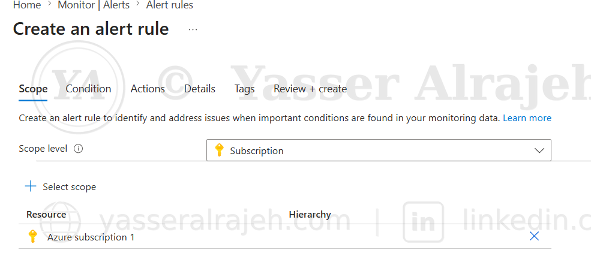
6.4 Final Health Check
The final review confirmed no active critical alerts were outstanding at the end of the governance validation cycle.

7. Outcomes Achieved
- Separated Production and Development using dedicated resource groups and non-overlapping network ranges.
- Applied a consistent naming convention across resource types.
- Enforced standardized tags and automatic Environment tag inheritance.
- Restricted deployments to approved Azure regions and approved Environment values.
- Protected Production from accidental deletion with a resource lock.
- Configured monthly budget alerts at 50%, 80%, and 100%.
- Applied Owner, Contributor, and Reader access according to least privilege.
- Validated governance through compliance review, remediation, and negative testing.
8. Skills Demonstrated
- Azure subscription and resource group governance
- Azure Policy authoring, assignment, remediation, and compliance monitoring
- Resource naming and enterprise tagging standards
- Azure RBAC and least-privilege access design
- Resource locks and deletion protection
- Cost Management, budgets, and alerting
- VNet, subnet, NSG, public IP, and storage provisioning
- Structured governance control testing